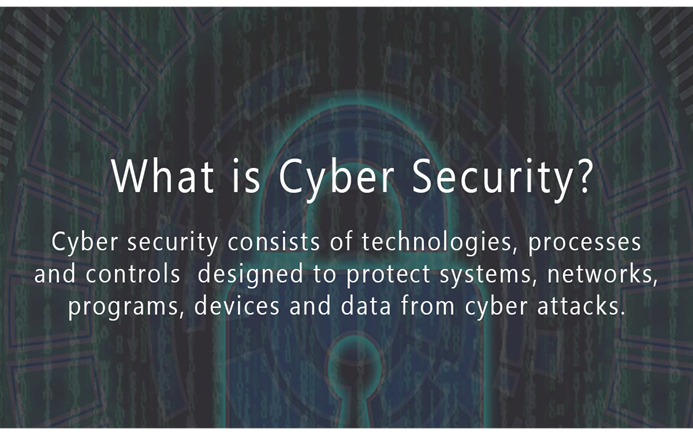
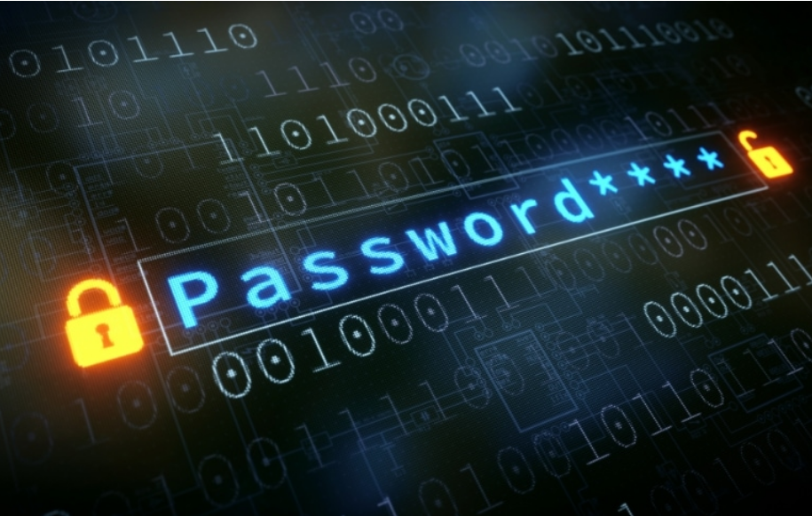
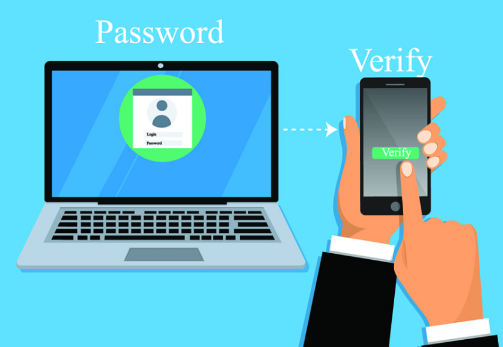
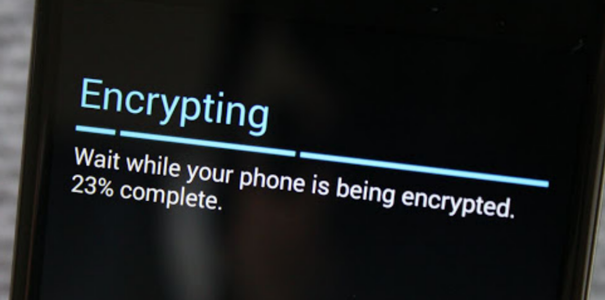
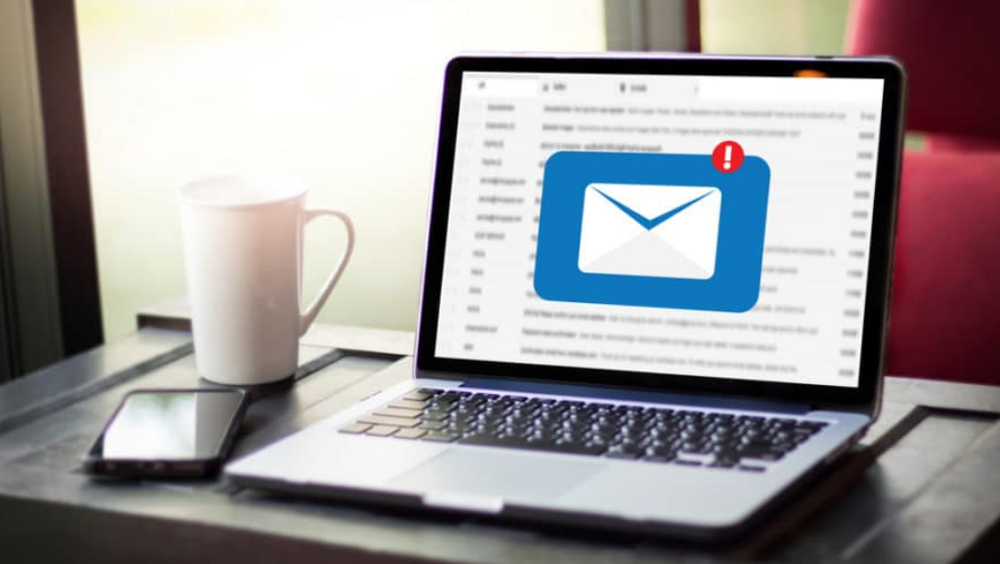
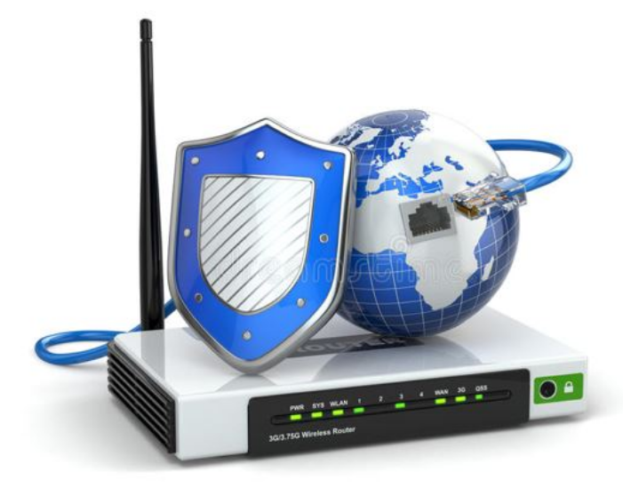
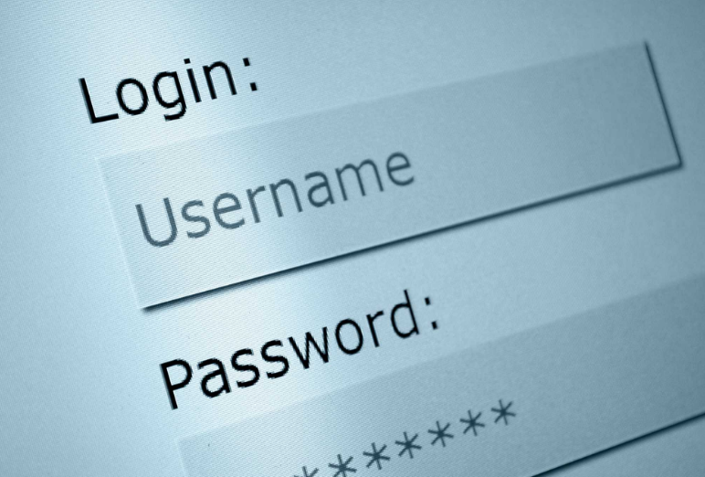

Knowing some cyber security basics and putting them in practice will help you protect your business and reduce the risk of a cyber attack.
This includes your apps, web browsers and operating systems. Set updates to happen automatically.
Backup important files offline, on an external hard drive, or in the cloud. Make sure you store your paper files securely, too.
 Use passwords for all laptops, tablets and smprtphones. Don't leave these drvices unattended in public places e.g. Co Working Spaces.
 Require Multi-Factor Authentication to access areas of your network with sensitive information. This requires additional steps beyond logging in with a passord - like a temporary code on a smartphone or a key that's inserted into ta computer.
 Encrypt devices and other media that contain sensitive personal information. This includes laptops, tablets, smartphones, removable drives, backup tapes and cloud storage solutions.
 Always be vigilant when opening unknown or suspicious emails from sources you don’t know. When unsure forward and and or contact Heath Cohen to inquire. Always look at the whole email address to see if it’s true and correct.
 Change the default name and password of your router, turn off remote management, and log out as the administrator once the router is set up.
 When keeping a file on your computer that have saved user names and passwords, make sure that it is protected by a password so that no one else can access its information. When writing down your user names and passwords, make sure that it is kept in a safe place where no one can access its data.
Your computer should be equipped with an antivirus application to warn when opening dangerous or suspicious web sites.